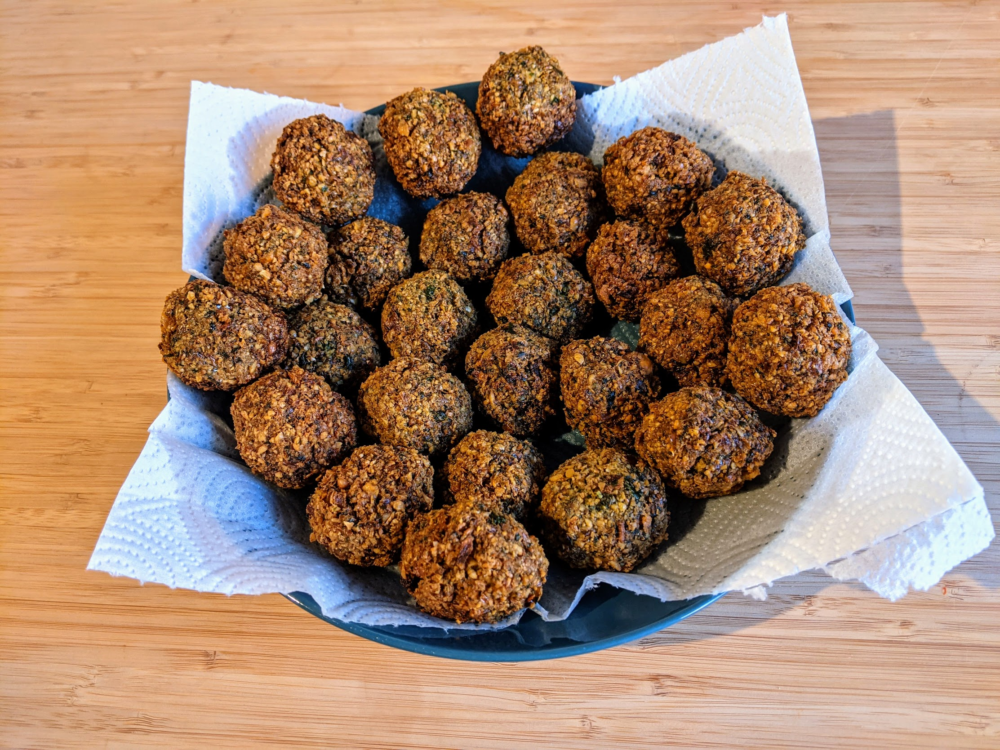

Falafels

Pour une petite vingtaine de falafels :
- 250g de pois chiches secs
- Un gros bouquet de coriandre
- Un gros bouquet de persil
- Un gros bouquet de menthe
- 70g d'oignons frais, en comptant uniquement la partie blanche & vert clair
- Deux gousses d'ail
- Une cuillère à café de cumin moulu
- Une demi-cuillère à café de coriandre moulue
- Deux cuillères à café de sel
- Pas mal d'huile de friture (genre 750mL)
- Rincer les pois chiches et les faire tremper une nuit dans un gros bol rempli de beaucoup d'eau froide.
- Le lendemain, égoutter, rincer, et bien sécher les pois chiches, avec une essoreuse à salade ou bien dans un torchon propre.
- Laver, sécher, et émincer les herbes et les oignons frais, éplucher et émincer l'ail, et mettre le tout avec les pois chiches, les épices et le sel dans le bol d'un mixeur.
- Mixer jusqu'à ce que tout soit bien fin, en remettant périodiquement les gros bouts qui attachent sur les bords au milieu. Il faut que si on presse une petite balle de la mixture dans sa main, ça tienne presque ensemble.
- Mettre le mélange dans un bol couvert au frigo pendant minimum 30 minutes.
- Sortir le mélange, et former des boules dans sa main. C'est très différent de quand on fait des biscuits : la pâte tient tout juste, mais il n'est pas question d'appuyer avec les deux mains ou de corriger les imprécisions. Presser avec juste une seule main, et poser chaque boule délicatement sur une assiette.
- Remplir une poêle d'huile de friture, il faut que la profondeur soit au moins 2cm. Faire chauffer l'huile jusqu'à ce qu'elle atteigne une température de 190°C ; si on a pas de thermomètre de cuisson, il faut qu'un petit morceau de pâte de falafel se mette à faire des bulles immédiatement lorsqu'on le pose dans l'huile.
- Déposer les boules dans l'huile de friture délicatement, par exemple avec une écumoire, en laissant un peu d'espace entre chaque (il faut typiquement faire plusieurs fois). Laisser frire jusqu'à ce que ça ait pris une jolie couleur sur le dessous, puis retourner délicatement avec une fourchette pour frire l'autre côté. Ça prend, en tout, environ 5 minutes par falafel.
- Transférer sur une assiette recouverte de papier absorbant pour que l'huile puisse s'égoutter un peu. Déguster chaud, avec du houmous ou du baba ganousch.
Remarque : un "gros bouquet" d'herbes, c'est pas très précis. Il faut qu'en tout, il y ait entre 60g et 70g d'herbes dans la préparation.